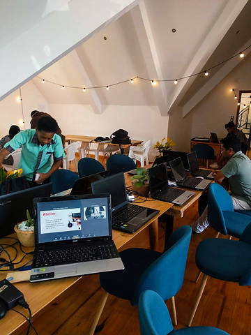

Garantir son avenir professionnel à tout âge avec l’entreprise digital de référence SAYNA.
Qu’est-ce qui vous empêche d’avoir une bonne source de revenu ?
Aviez-vous la sensation des difficultés sur la recherche des clients, la signature de son premier contrat et de gagner leurs confiances à long terme. Le manque de compétence et des expériences entament la perte de temps, les refus de l’offre de service et des demandes d’emploi sur différente plateforme, or le marché mondial dans le métier digital pèse plus de 4.621 Milliard d’euros. Le service SAYNA WORK offre l’opportunité pour toutes les personnes que ce soit un homme ou une femme, jeune ou adulte, père ou mère de famille qui souhaitent d’intégrer dans le monde digital professionnel.
C’est quoi SAYNA ?

C’est une entreprise digitale qui forme et recrute des jeunes venant des pays francophones dans les métiers le plus recherchés à nos jours. Ses objectifs sont de réduire le taux de chômage et de la pauvreté en formant 10.000 digital worker et en embauchant 8.000 microtasker d’ici 2024. La qualité de la formation entre ces différents pays est égale et complètement en ligne.
Avec SAYNA WORK, plus de 250.000 micro-tâches de codage vous attend. Les clients comptent plus de soixantaines d'entreprises et groupes d’entreprise, des PME et startups que ce soit en France, au Canada, à l'île de la Réunion, en Australie ou à Madagascar. Elles ont besoin de la transformation digitale, de l’automatisation des tâches, des chat bot et développement de leur service client. Les postes sont les suivants : développeur web frontend, développeur backend, rédacteur web, react, et autre. Vous serez plus avantageux que les simples Freelancer, car SAYNA assure tous les besoins du client en termes de qualité de travail, délai de livraison, la recherche des clients et le service après-vente. Les encadreurs sont très qualifiés dans les grandes universités de la France comme le polytechnique.
Cette entreprise collabore avec des grandes entreprises francophones comme the hacking project, la banque mondiale, la STAR, le groupe AXIAN, le groupe INVISO, la Société Générale, l’Accès banque, Orange et l’OIF durant ses deux ans et demi d’existence et réputer par les pays africains francophones.
Comme fait-on pour accéder à la famille SAYNA ?
Une bonne source de revenu nécessite une bonne compétence ainsi que des expériences sur le poste similaire. Si on parle du mot numérique, l’informatique et l’internet de base sont indispensables avant d’assurer votre niveau de français. Pas de panique si vous n’en êtes pas capable. SAYNA offre une autre opportunité de formation durant 4 mois et le paiement du frais aura lieu lorsque vous serez embauché avec un taux de réussite de 80% à 90%.